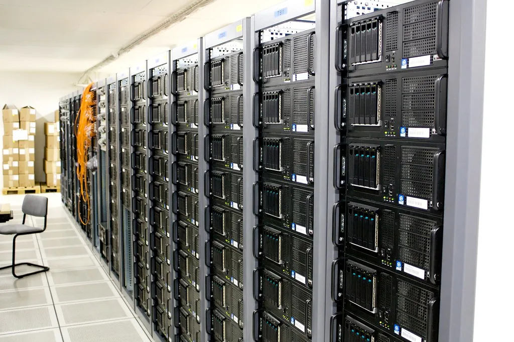

삼성전자 2분기 낸드 1위 수성…中 양쯔메모리 첫 글로벌 3위 진입
올해 2분기 전 세계 낸드플래시 시장에서 삼성전자가 출하량 기준 1위 자리를 지킨 가운데, 중국 양쯔메모리(YMTC)가 처음으로 글로벌 3위권에 이름을 올린 것으로 나타났다. 시장조사업체 집계에 따르면 삼성전자는 2분기 낸드 출하량의 25%를 차지해 선두를 유지했고, 솔리다임을 포함한 SK하이닉스가 22%로 뒤를 이었다. 그동안 3위권을 지켜온 일본 키옥시아는 양쯔메모리에 밀려 순위가 내려갔다.
양쯔메모리는 이번 2분기 출하량 점유율 14%를 기록하며 키옥시아를 제치고 처음으로 톱3에 진입했다. 전년 동기 대비 출하량이 22%, 직전 분기 대비로는 5% 늘어난 결과다. 다만 매출 기준으로는 여전히 마이크론과 키옥시아에도 못 미치는 5위에 머물렀는데, 이는 수익성이 높은 데이터센터용 기업용 SSD보다 상대적으로 단가가 낮은 소비자용 제품 비중이 높기 때문으로 분석된다.

이번 순위 변동은 인공지능(AI) 확산에 따라 낸드플래시 수요가 가파르게 늘어나는 시기에 나왔다는 점에서 주목받는다. 추론형 AI 서비스 확산과 검색증강생성(RAG) 기술 도입이 늘면서, 대용량 데이터를 빠르게 저장하고 불러오는 데 강점을 지닌 낸드 기반 저장장치 수요가 함께 커지고 있다. 특히 AI 데이터센터 구축이 이어지면서 고용량·고효율 기업용 SSD를 중심으로 낸드 시장 자체가 빠르게 몸집을 불리는 흐름이다.
이런 수요 확대는 가격에도 그대로 반영되고 있다. 시장조사업체들은 낸드 범용 제품의 계약 가격이 분기마다 두 자릿수 이상 오르는 등 최근 반년 사이 가격이 여러 배 뛰었다고 전하고 있다. 메모리카드나 USB 등에 쓰이는 범용 낸드 제품의 평균 가격은 지난해 말과 비교해 반년 만에 다섯 배 넘게 오른 것으로 파악됐고, 시장조사업체 트렌드포스는 최근 분기 낸드 계약 가격이 직전 분기 대비 70%대까지 뛰었다고 전망하기도 했다. 공급이 수요를 따라가지 못하는 상황이 이어지면서 삼성전자와 SK하이닉스 등 선두권 기업들의 수익성도 함께 개선되는 추세다. 시장조사업체 옴디아는 전 세계 낸드 시장 규모가 올해 큰 폭으로 확대된 데 이어 내년에도 성장세를 이어갈 것으로 내다봤다.

양쯔메모리의 약진은 중국 정부의 반도체 자립 정책과 맞물려 있다는 평가가 나온다. 미국의 대중 반도체 수출 규제 속에서도 중국 업체들이 자국 내 생산 능력을 빠르게 늘려온 결과, 낸드 시장에서만큼은 출하량 기준 톱3 진입이라는 성과로 이어졌다는 분석이다. 업계에서는 양쯔메모리가 앞으로 데이터센터용 고부가 제품 비중을 얼마나 빠르게 늘려 매출 순위까지 끌어올릴 수 있을지가 다음 관전 포인트가 될 것으로 보고 있다.
국내 업계는 이번 순위 변화를 계기로 중국발 경쟁 심화 가능성에 대비하는 한편, AI발 수요 호황이 이어지는 동안 고부가 제품 중심의 초격차 전략을 강화한다는 방침이다. 삼성전자와 SK하이닉스 모두 차세대 낸드 기술 개발과 생산능력 확충에 속도를 내고 있어, 하반기 시장 판도 변화에도 관심이 쏠리고 있다. 특히 두 회사는 기업용 SSD와 고성능 스토리지 솔루션 비중을 늘려 수익성을 방어하는 동시에, 범용 제품 시장에서 중국 업체와의 가격 경쟁에도 대응해야 하는 이중 과제를 안고 있다는 분석이 나온다.